モンステラMonstera deliciosa
AIで植物を推定
写真を撮るかライブラリから選ぶと、植物の画像識別サービスPl@ntNetを使って、植物名の候補を出します。選んだ候補の学名も入ります。
iPhoneアプリ
観葉植物を育てている人向けです。水やりなどの予定を通知で知らせます。写真と2秒の動画を撮りためると、育っていく様子を1本の動画で見返せます。
iPhoneのカメラで読み取ると、App Storeが開きます
Video Moment / Plant Story
Video Momentは、2秒で自動的に止まる短い動画です。同じ植物の動画が2本以上たまったら、撮った順につないでPlant Storyにできます。写真にも動画にも、迎えた日から何日目かを表すDAYが入ります。
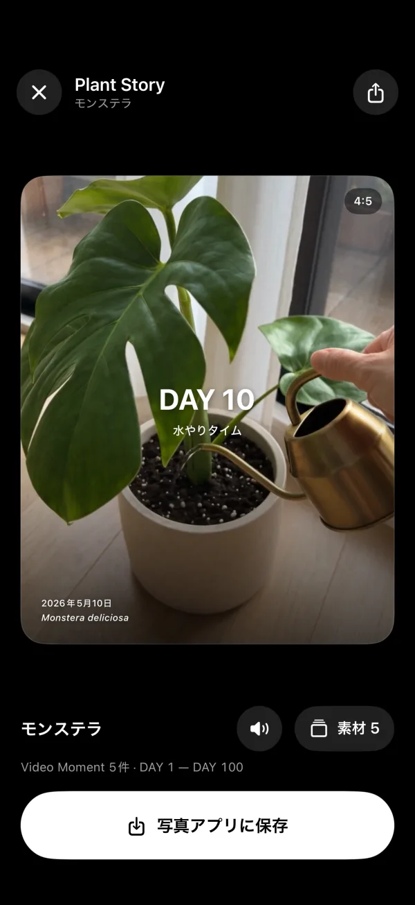
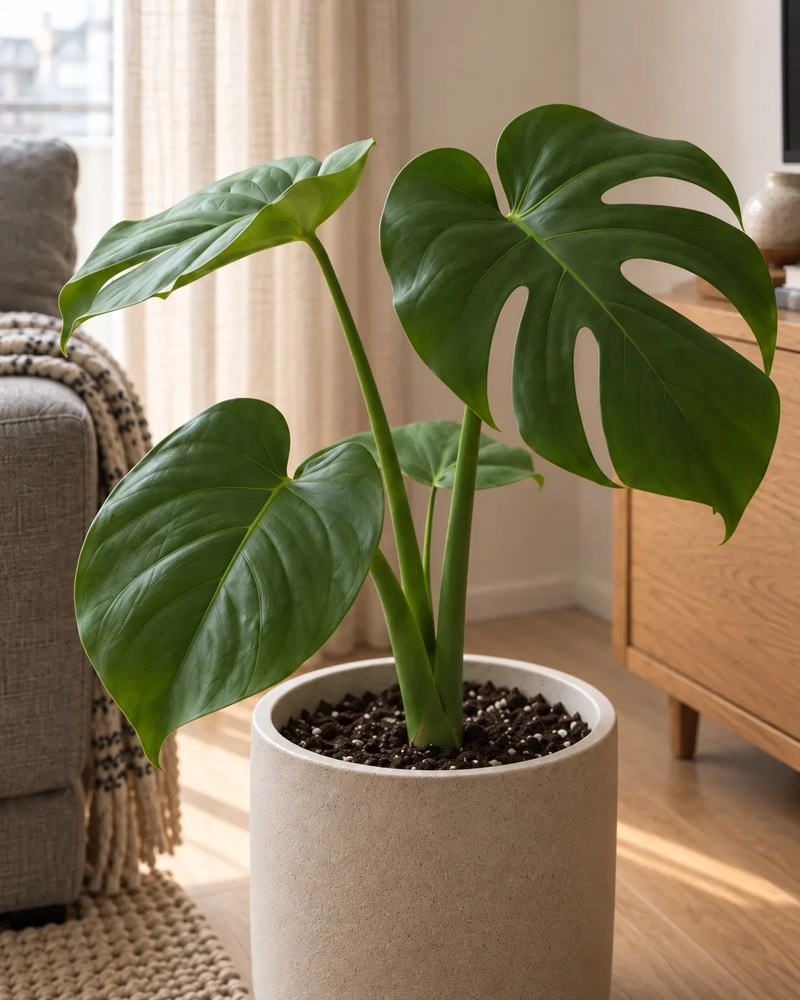
DAY 1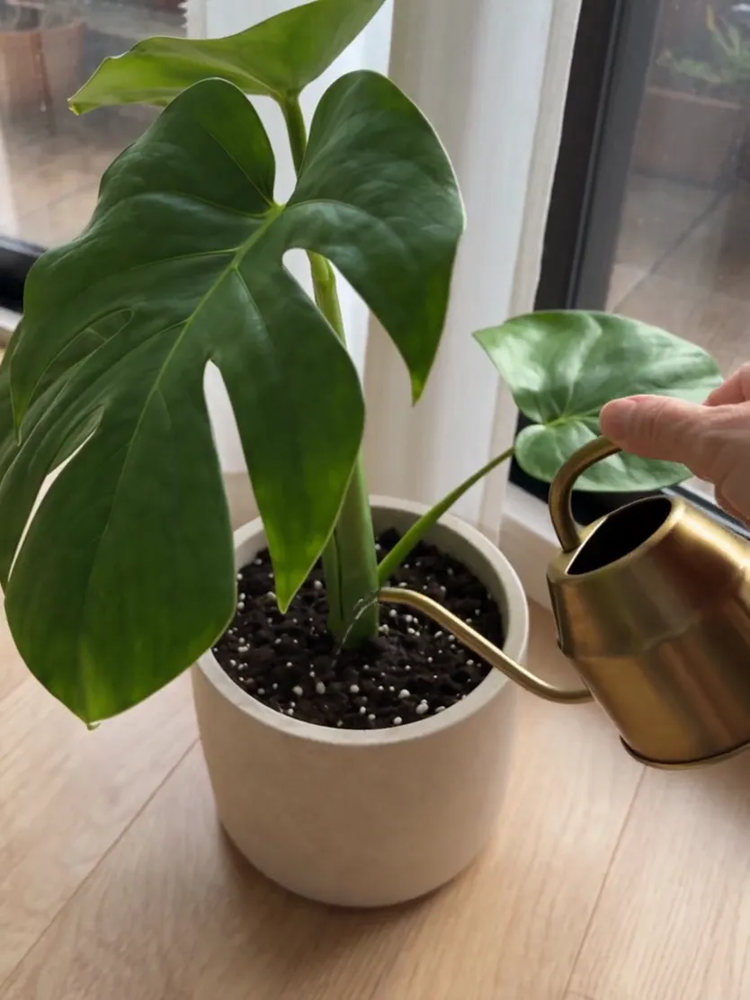
DAY 10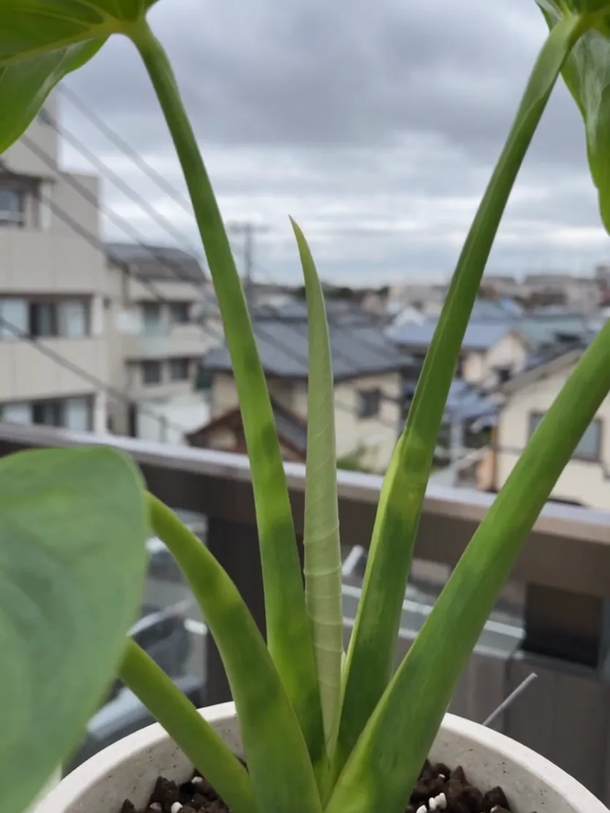
DAY 30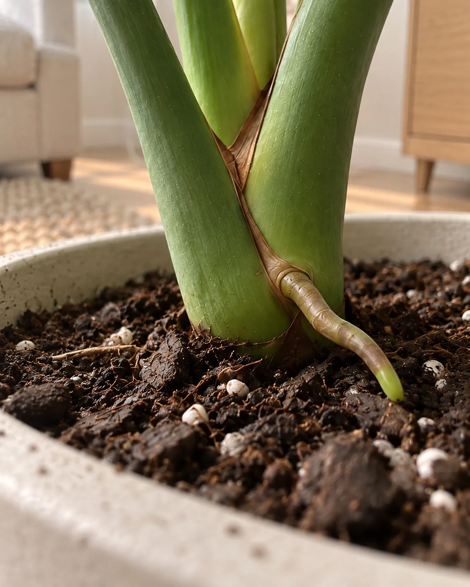
DAY 50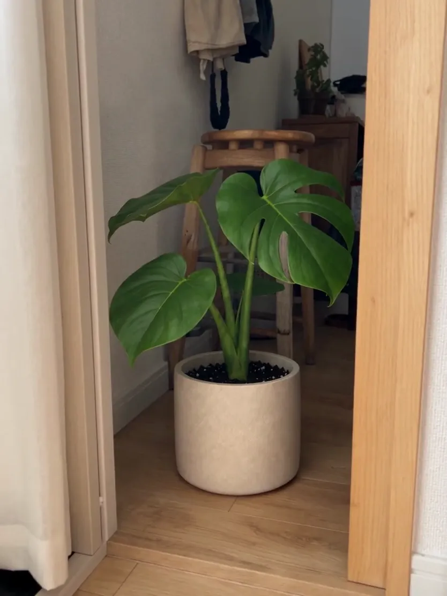
DAY 100植物の管理
一覧には植物ごとに、写真、DAY、次のお手入れまでの日数が並びます。
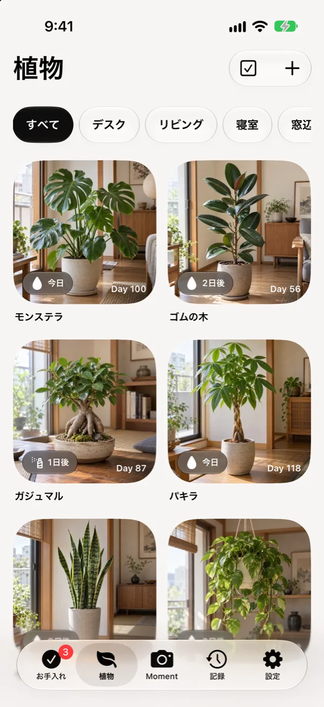
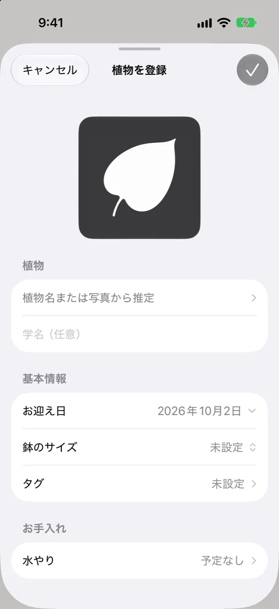
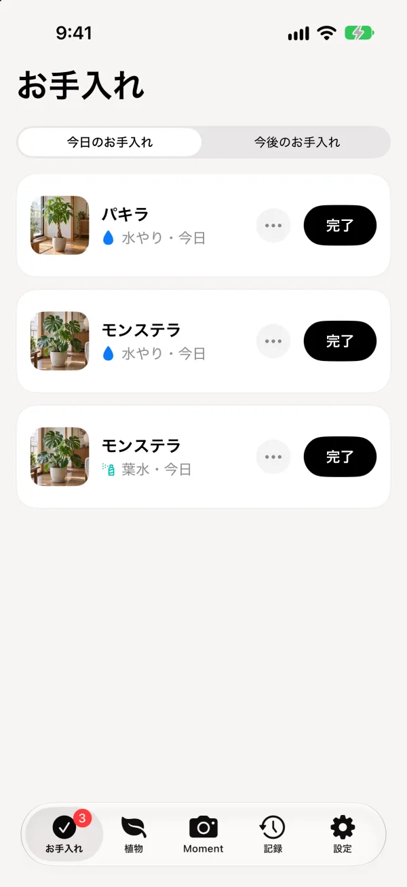
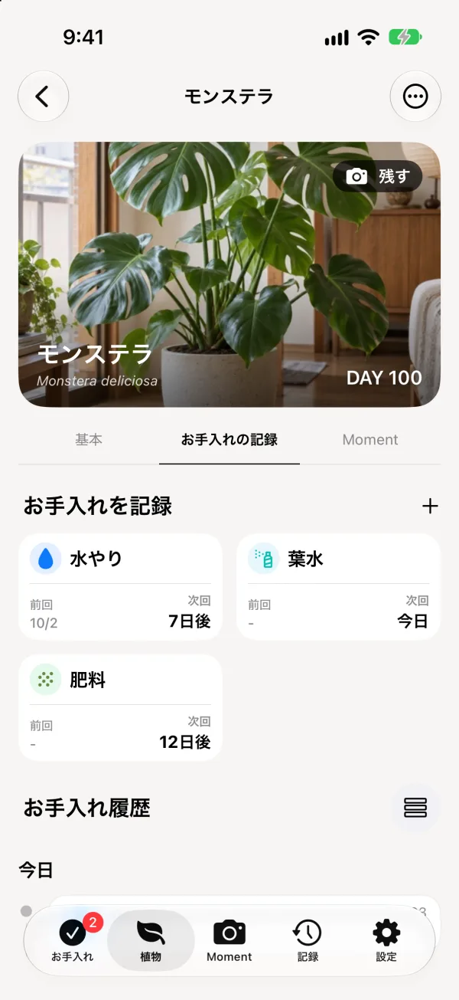
お手入れ
水やり、葉水、肥料などの予定を植物ごとに決めておけます。
写真を撮るかライブラリから選ぶと、植物の画像識別サービスPl@ntNetを使って、植物名の候補を出します。選んだ候補の学名も入ります。
「リビング」「窓辺」などのタグで、一覧を絞り込めます。
複数の植物を選んで、水やりなどを一度に記録できます。
記録タブのカレンダーで、全部の植物のお手入れとMomentを日付ごとに見られます。
「夏は3日ごと、冬は10日ごと」のように、月ごとに間隔を変えられます。
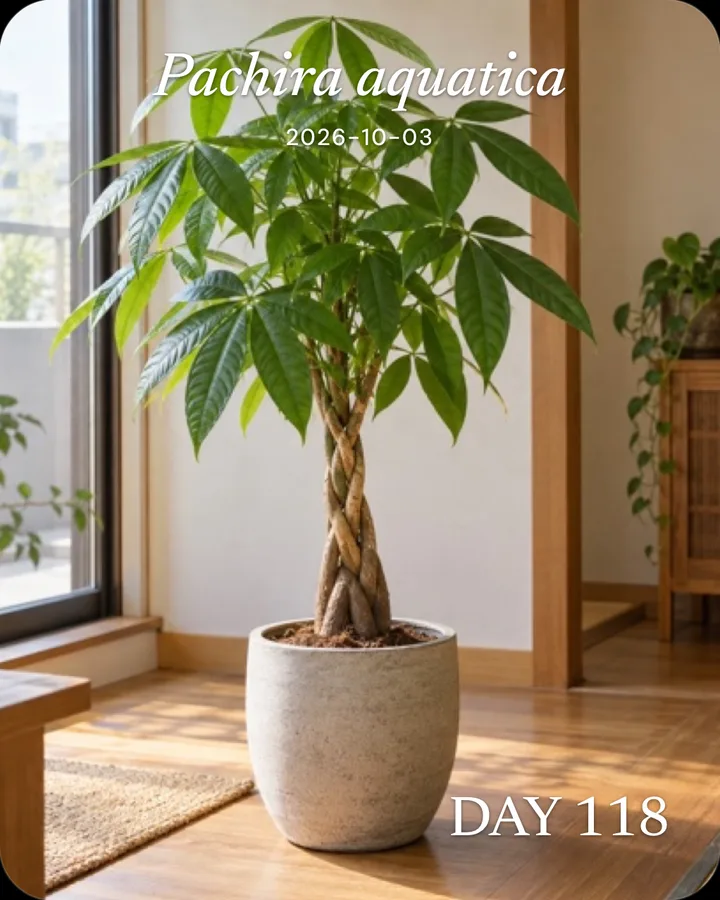
写真には6種類のフィルターがあり、文字は白か黒を選べます。DAY・植物名・日付は、位置と大きさも変えられます。
「数日ごと」のほかに、「毎週水曜」「2週間ごとの日曜」のような曜日での指定や、1回だけの予定も作れます。
その日のお手入れは、1回の通知にまとめて届きます。時刻は設定で変えられます。終わっていない分は、翌日にもう一度だけ届きます。
水やり、葉水、肥料、植え替え、剪定、害虫対策から選んで追加できます。名前・アイコン・色を決めて、自分で項目を作ることもできます。
記録タブのタイムラインには、お手入れの記録、写真、2秒の動画が日付順に並びます。
号数（0.5号刻み）でも、直径（cm）でも登録できます。
記録・写真・動画を1つのファイルにまとめて、「ファイル」アプリに保存できます。機種変更のときは、そのファイルから元に戻せます。
Momentタブから写真を撮ります。テンプレートを選べば、DAYと名前の入った1枚になります。
Photo Moment
Photo Momentは、DAY、植物名、撮影日を入れて仕上げる写真です。テンプレートは6種類あり、変わるのは文字の位置です。
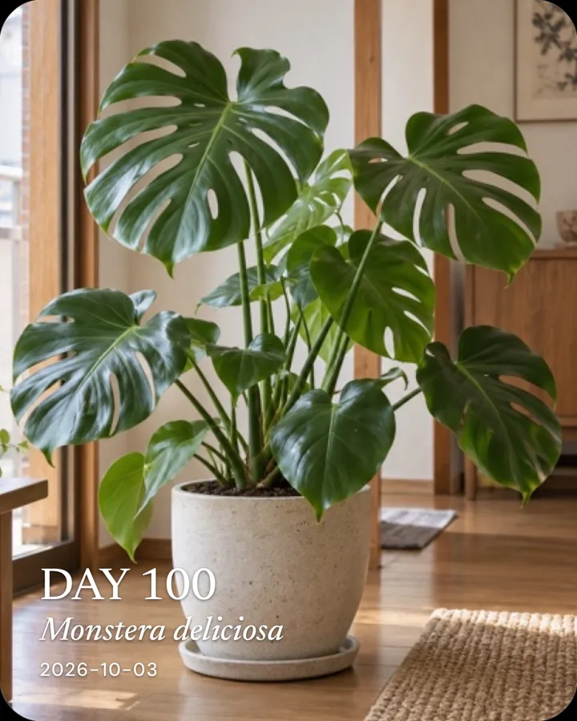
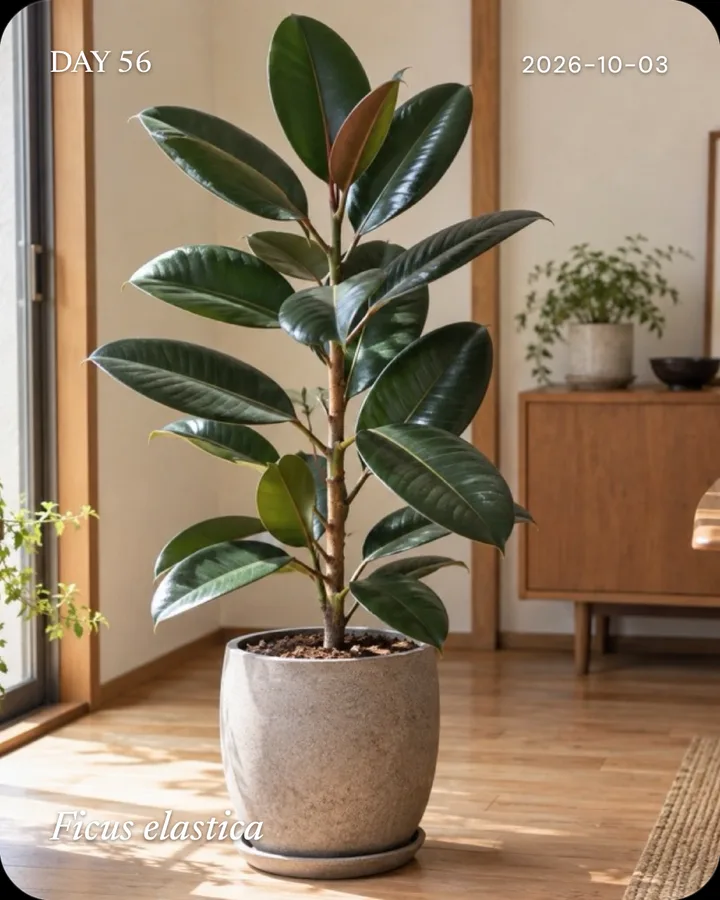
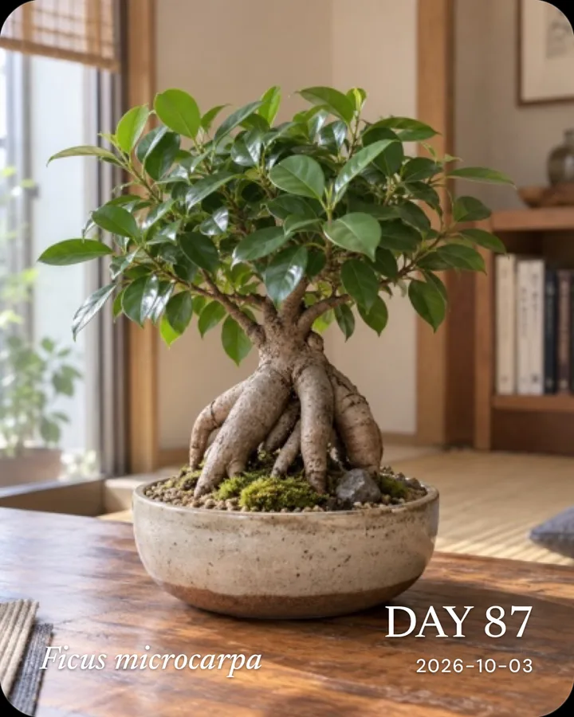
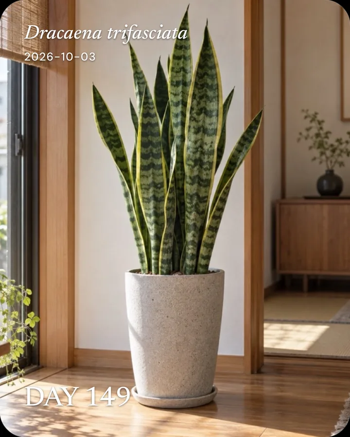
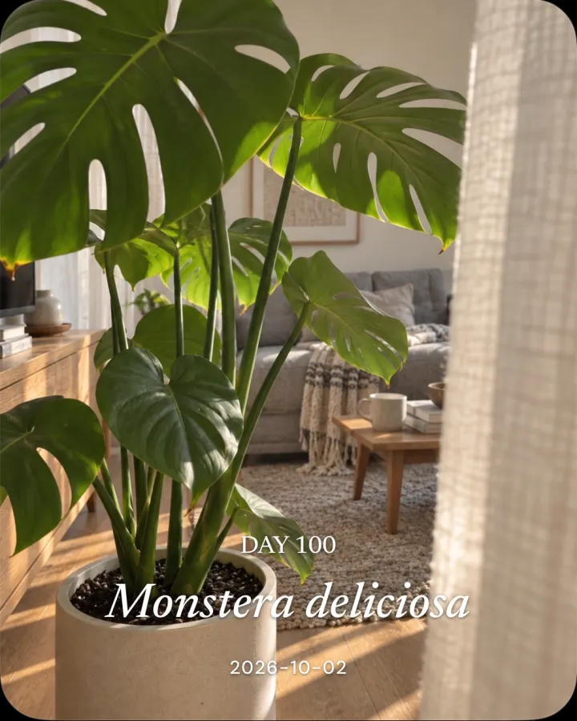
2株までは無料で使えます。広告はありません。
無料
2,480円買い切り
または月額500円
価格は日本のApp Storeのものです。買い切りと月額で、使える機能は同じです。
iPhone用。2株までは無料で使えます。
App Storeでダウンロード